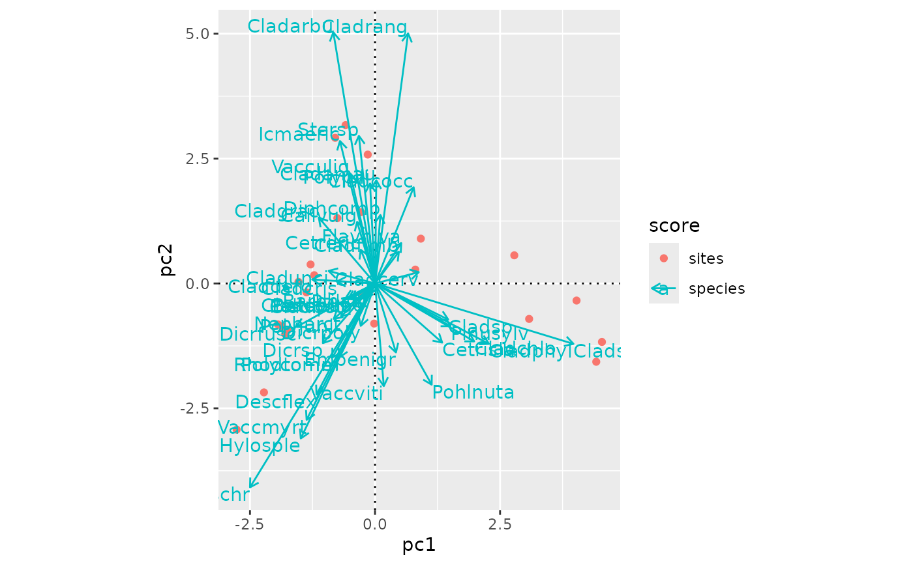
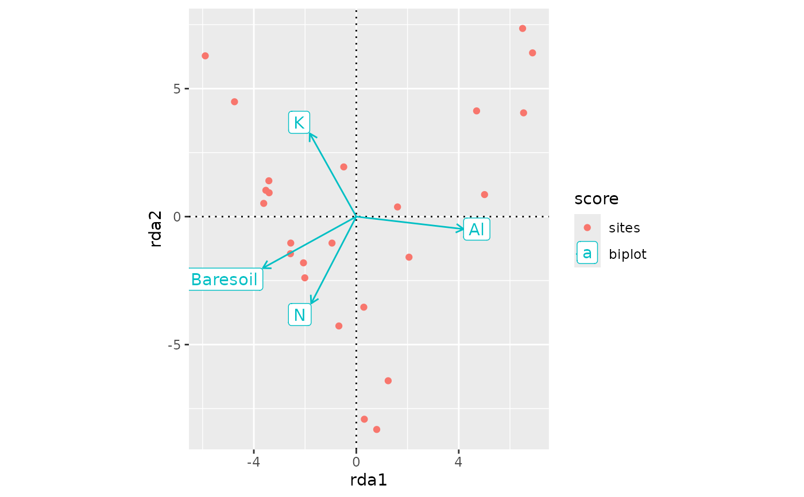

Function adds layers of arrows (ggplot2::geom_segment()) and
(optionally) their text labels (ggplot2::geom_text() or
ggplot2::geom_label()) to an ordiggplot() graph. Typically
these arrows are biplot or regression scores, but the function
allows drawing species arrows for PCA biplots, or adding fitted
environmental vectors of vegan::envfit().
Arguments
- score
Ordination score to be added to the plot.
- data
Alternative data to the function that will be used instead of
score. This can be a vegan::envfit result object which is used to draw arrows of fitted vectors.- text
Add text labels to the plot (logical).
- box
Draw a non-transparent box behind the text (logical).
- arrow.mul
Arrow multiplier when arrows end points are given in
data. Ignored forbiplotandregressionscores orspeciesscores which are already scaled in constrained ordination methods when callingordiggplot().- arrow.params, text.params
Parameters to modify arrows or their text labels.
- ...
other arguments passed to
ggplot2::geom_segment(),ggplot2::geom_label()andggplot2::geom_text()
Value
Returns ggplot2 layers geom_segment for arrows, and
geom_text or geom_label (optionally) for their names.
See also
Underlying functions are ggplot2::geom_segment(),
ggplot2::geom_text() and ggplot2::geom_label().
Examples
library(vegan)
data(varespec, varechem, package="vegan")
## PCA biplot
mod <- rda(varespec)
ordiggplot(mod, scaling = "sites", corr = TRUE) +
geom_ordi_axis() +
geom_ordi_point("sites") +
geom_ordi_arrow("species")

## RDA
mod <- rda(varespec ~ N + K + Al + Baresoil, varechem)
ordiggplot(mod) +
geom_ordi_axis() +
geom_ordi_point("sites") +
geom_ordi_arrow("biplot", box = TRUE)
